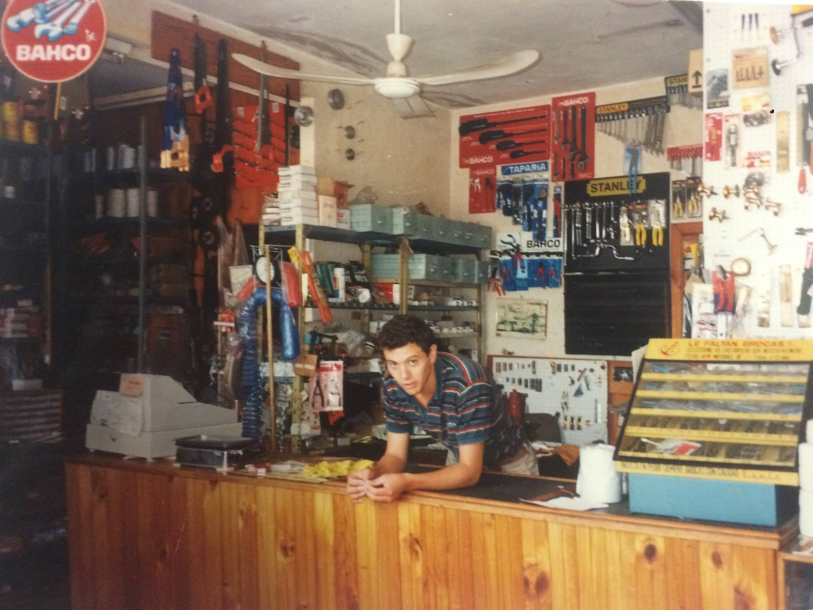
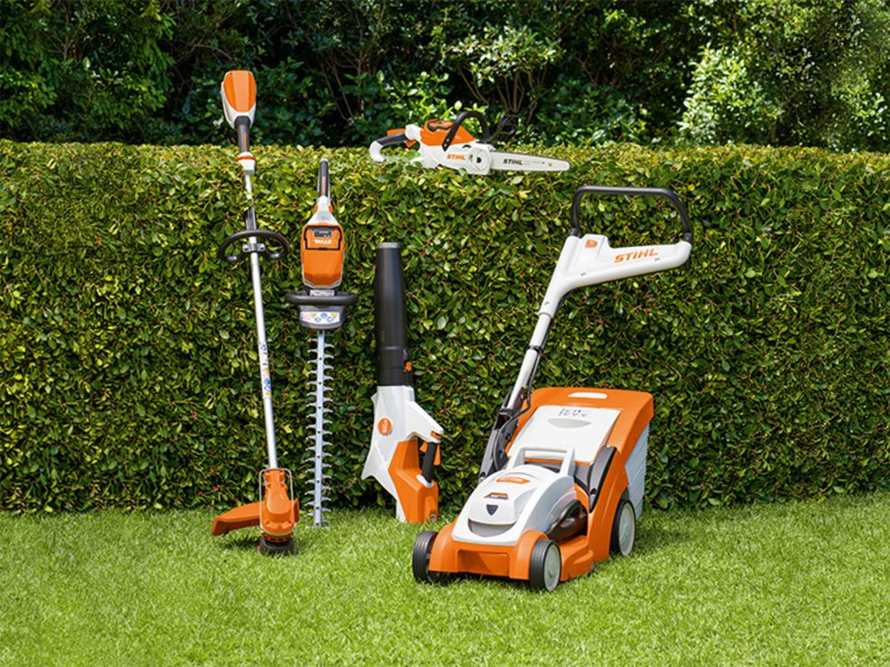
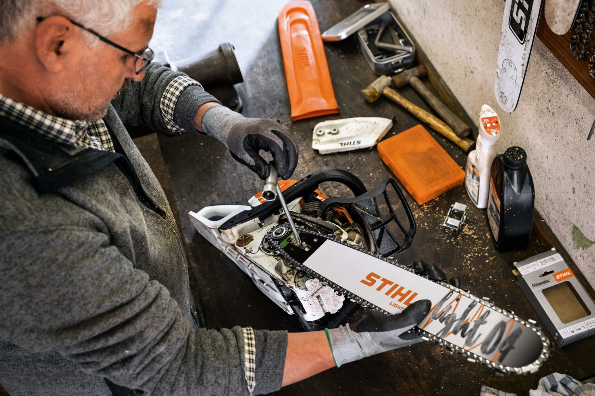

Ferretería y Servicio Técnico Oficial STIHL en Dolores, Buenos Aires
Ferretería en Doloresss, Buenos Aires. Concesionario y servicio técnico oficial STIHL.
FERRADIEL
Su ferretería de confianza desde hace más de 50 años
PROV. DE BUENOS AIRES
Fundada hace más de 50 años, por Don Juan Carlos Casañas quien, impulsado por su visión emprendedora y acompañado junto a su esposa Elena Wallace, ambos con un espíritu laborioso y honesto se embarcaron en un proyecto familiar al cual dieron el nombre de "Ferretería Ferradiel" por las iniciales de sus hijos.
La Ferretería fue heredada por su hijo Diego Casañas quien recogió el ejemplo y la ha consolidado como una empresa de referencia en Dolores, destacándose por ofrecer productos de alta calidad y un servicio personalizado. Desde hace más de 26 años, la tienda es concesionario oficial de Stihl, siendo pionera en la venta y reparación de maquinaria de esta prestigiosa marca alemana en la región.
Diego Casañas, además de ser el propietario y gestor del negocio, es técnico especializado y oficial de Stihl, lo que garantiza un servicio de reparación y mantenimiento de primera calidad para todos los productos comercializados. A lo largo de los años, Ferradiel ha mantenido su compromiso con la excelencia, brindando confianza y satisfacción a sus clientes y cultivando el respeto por sus sólidos orígenes.
Concesionario Oficial STIHL en Dolores
Nos enorgullece ser distribuidor oficial y servicio tecnico certificado de STIHL DESDE HACE MÁS DE 20 AÑOS.
Ofrecemos productos de alta calidad y confiabilidad además del mejor servicio post-venta.
En FERRADIEL puedes adquirir cualquier producto fabricado por la marca Stihl, incluyendo maquinaria de ferretería, maquinaria de mantenimiento, equipos de seguridad y productos de limpieza.
Consultános por el producto que buscas
Servicio técnico STIHL en Dolores
Reparación y mantenimiento de maquinaria. Somos service certificado de STIHL desde hace más de 15 años.
Ferretería en Dolores
Ferradiel es atendida por su dueño DIEGO CASAÑAS.
Contamos con cientos de productos de todas las marcas.
Elementos de Iluminación, herramientas, maquinaria de mantenimiento, equipos de seguridad, productos de limpieza,entre otros.
Contacto
Dirección: PUEYRREDÓN 86, DOLORES.
Teléfono: (2245) 42-0008
email: ferradiel2017@gmail.com